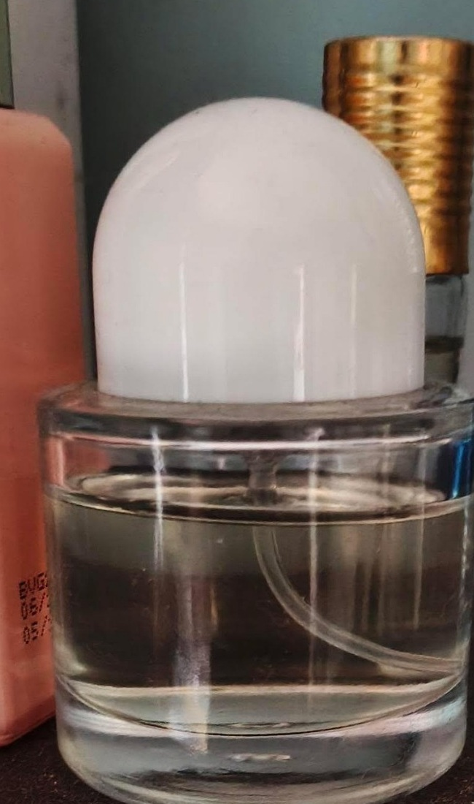

Oud
Smoky woods, warm resin and a regal depth.
A modern expression of timeless attar — concentrated fragrance oils, rich woods, delicate florals and a trail designed to be remembered.

REAL PRODUCT · SIAM JAMILOur opening collection brings together the fragrance families people return to again and again: oud, musk, rose, sandalwood and fresh accords.
Dark woods meet warm amber in a concentrated roll-on attar created for evenings, celebrations and the moments you want people to remember.
Siam Jamil is built around one simple idea: fragrance should feel personal. We pair the character of classic attar with a refined, contemporary presentation — made to become part of your daily ritual.
Smoky woods, warm resin and a regal depth.
Soft, intimate and clean with a warm skin-like finish.
Velvety petals balanced with oriental warmth.
Creamy woods, gentle spice and quiet luxury.
“It is the best Attar I have bought.”
— SIAM JAMIL · FOUNDER“Perfect for evenings. The oud is rich without feeling overwhelming.”
— VERIFIED CUSTOMER“A beautiful gifting option. Elegant presentation from the first look.”
— VERIFIED CUSTOMER